Original Google Slides (well-formatted) Quarto version may have some slides missing or poorly formatted
Encode N categories as a sparse, N-dimensional vector, where each column corresponds to a category. The data’s vector encoding __ is such that each element is 1 if the data s that category, and 0 otherwise.__
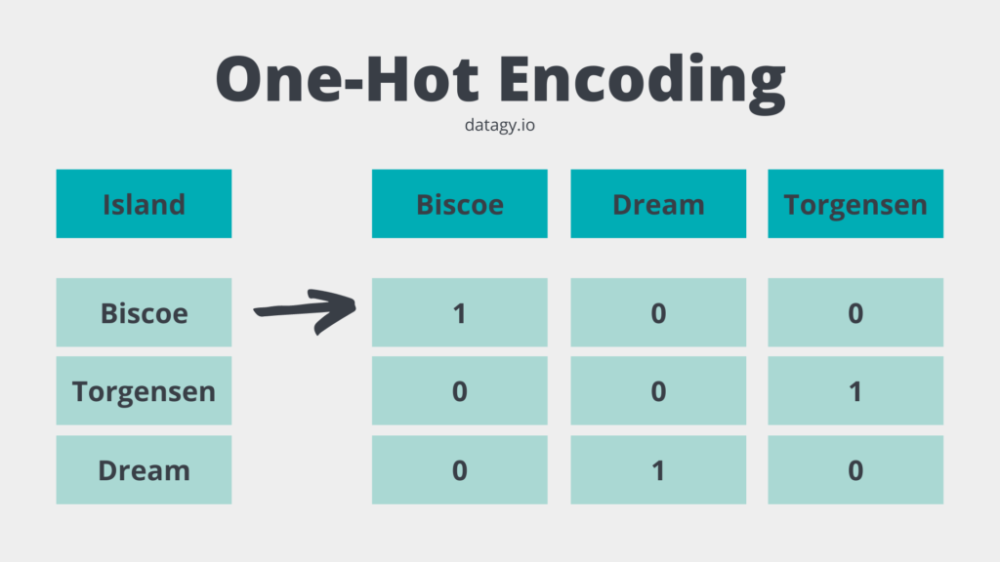
“In statistics, __ latent variables __ ... are variables that can only be __ inferred indirectly __ through a mathematical model from other observable variables that can be directly observed or measured.” - Wikipedia
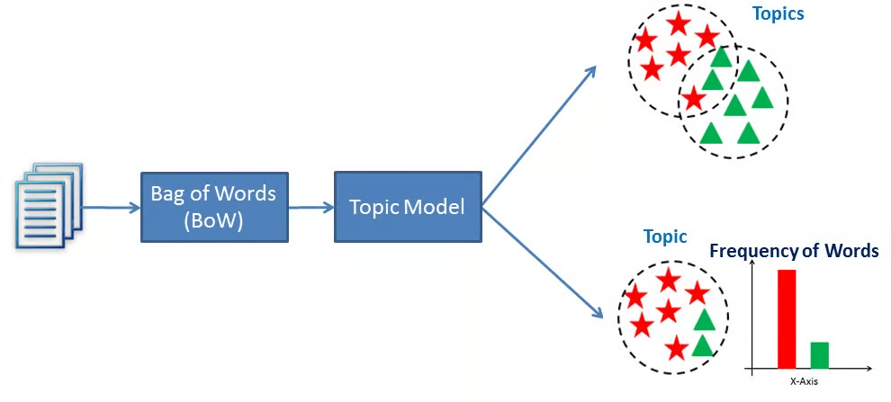
Background : We have a lot of unstructured text documents, consisting of words.
Problem : We want to establish what the topic of each document is. This is unsupervised learning because we do not know have the labeled topics beforehand. For example, we want to organize a library of digital books by topic, without reading every single book.
Document: Text
“A whopping 96.5 percent of water on Earth is in our oceans, covering 71 percent of the surface of our planet. And at any given time, about 0.001 percent is floating above us in the atmosphere. If all of that water fell as rain at once, the whole planet would get about 1 inch of rain.”
“One-third of your life is spent sleeping. Sleeping 7-9 hours each night should help your body heal itself, activate the immune system, and give your heart a break. Beyond that--sleep experts are still trying to learn more about what happens once we fall asleep.”
“A newborn baby is 78 percent water. Adults are 55-60 percent water. Water is involved in just about everything our body does.”
corpus = [doc_1, doc_2, doc_3]
End Result:
(1, ‘0.071*“water” + 0.025*“state” + 0.025*“three”, …’),
(2, ‘0.030*“still” + 0.028*“hour” + 0.026*“sleeping”’, …),
(3, ‘0.073*“percent” + 0.069*“water” + 0.031*“rain”’, …)
Background : We have a lot of unstructured text documents, consisting of words.
Problem : We want to establish what the topic of each document is. This is unsupervised learning because we do not know have the labeled topics beforehand. For example, we want to organize a library of digital books by topic, without reading every single book.
Solution: We can:
1) First “clean” and normalize the text to a standard form to make it easier for natural language processing.
2) Count the number of times each word appears in each document, without regard for word order (ie a bag-of-words).
3) Statistically model how the difference in word frequencies in each document represents the topic. There are 2 main algorithms for this: Latent Semantic Analysis __ (LSA) and __ Latent Dirichlet Allocation __ (LDA).__
4) For each document, return a vector representing the main words associated with the document’s topic, and how strongly each word associates with the document’s topic. This identifies the main topics in each document.
Normalization
1) Removing stopper words and punctuation.
2) Perform lemmatization on the words to replace all the variations of a word with it’s normal, basic form.
“Lemmatization (or less commonly lemmatization ) in linguistics is the process of grouping together the inflected forms of a word so they can be analysed as a single item, identified by the word’s lemma, or dictionary form.” - https://en.wikipedia.org/wiki/Lemmatization
ran, runs, running -> run
better -> good
“A whopping 96.5 percent of water on Earth is in our oceans, covering 71 percent of the surface of our planet. And at any given time, about 0.001 percent is floating above us in the atmosphere. If all of that water fell as rain at once, the whole planet would get about 1 inch of rain.” -> [‘whopping’,‘965’,‘percent’,‘water’,‘earth’,‘ocean’,‘covering’,‘71’,‘percent’,‘surface’,‘planet’,‘given’,‘time’,‘0001’,‘percent’,‘floating’,‘u’,‘atmosphere’,‘water’,‘fell’,‘rain’,‘once’,‘whole’,‘planet’,‘would’,‘get’,‘1’,‘inch’,‘rain’]
https://en.wikipedia.org/wiki/Lemmatization
Create document-word matrix.
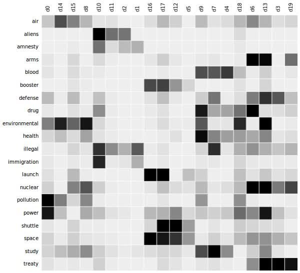
Latent Semantic Analysis __ (LSA)__
Create document-word matrix.
Do Singular Value Decomposition to reduce the dimensionality using cosine similarity.
Latent Semantic Analysis __ (LSA)__
Create document-word matrix.
Do Singular Value Decomposition to reduce the dimensionality using cosine similarity.
LSA assumes words with similar meanings will appear in similar documents. It does so by constructing a matrix containing the word counts per document, where each row represents a unique word, and columns represent each document, and then using a Singular Value Decomposition (SVD) to reduce the number of rows while preserving the similarity structure among columns. SVD is a mathematical method that simplifies data while keeping its important features. It’s used here to maintain the relationships between words and documents.
To determine the similarity between documents, cosine similarity is used. This is a measure that calculates the cosine of the angle between two vectors, in this case, representing documents. A value close to 1 means the documents are very similar based on the words in them, whereas a value close to 0 means they’re quite different.
Latent Semantic Analysis __ (LSA)__
Create document-word matrix.
Do Singular Value Decomposition to reduce the dimensionality using cosine similarity.
LSA assumes words with similar meanings will appear in similar documents. It does so by constructing a matrix containing the word counts per document, where each row represents a unique word, and columns represent each document, and then using a Singular Value Decomposition (SVD) to reduce the number of rows while preserving the similarity structure among columns. SVD is a mathematical method that simplifies data while keeping its important features. It’s used here to maintain the relationships between words and documents.
To determine the similarity between documents, cosine similarity is used. This is a measure that calculates the cosine of the angle between two vectors, in this case, representing documents. A value close to 1 means the documents are very similar based on the words in them, whereas a value close to 0 means they’re quite different.
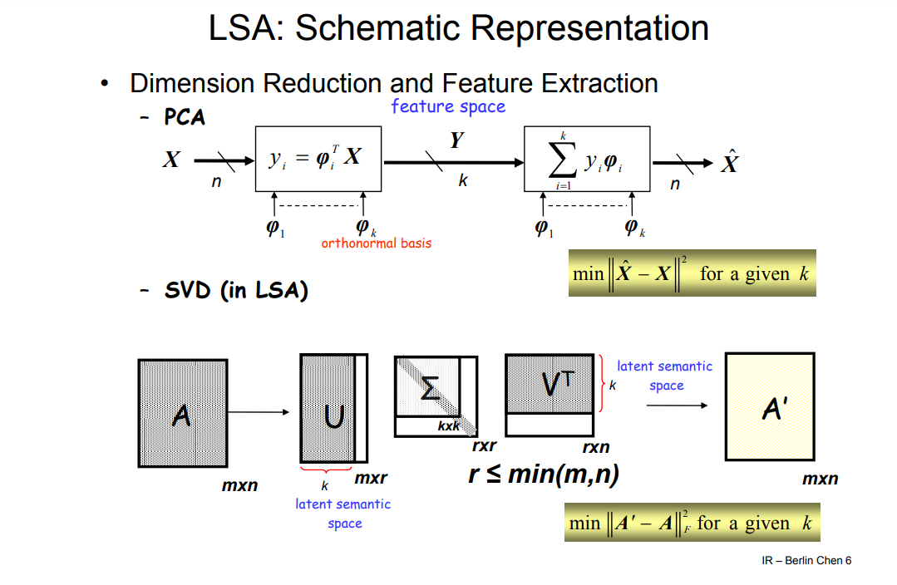
Latent Dirichlet Allocation __ (LDA)__
LDA is a Bayesian network, meaning it’s a generative statistical model that assumes documents are made up of words that aid in determining the topics. Thus, documents are mapped to a list of topics by assigning each word in the document to different topics. This model ignores the order of words occurring in a document and treats them as a bag of words.
Randomly map each word to a topic.
Bayesian update to improve guess on each iteration.
Stop when objective function stops decreasing.
A way to assign each word to a vector of real numbers, such that each vector has the same length, and so that the relative locations of each vector in the multidimensional space encode information about the relations between words.
More similar data has vectors located closer together.
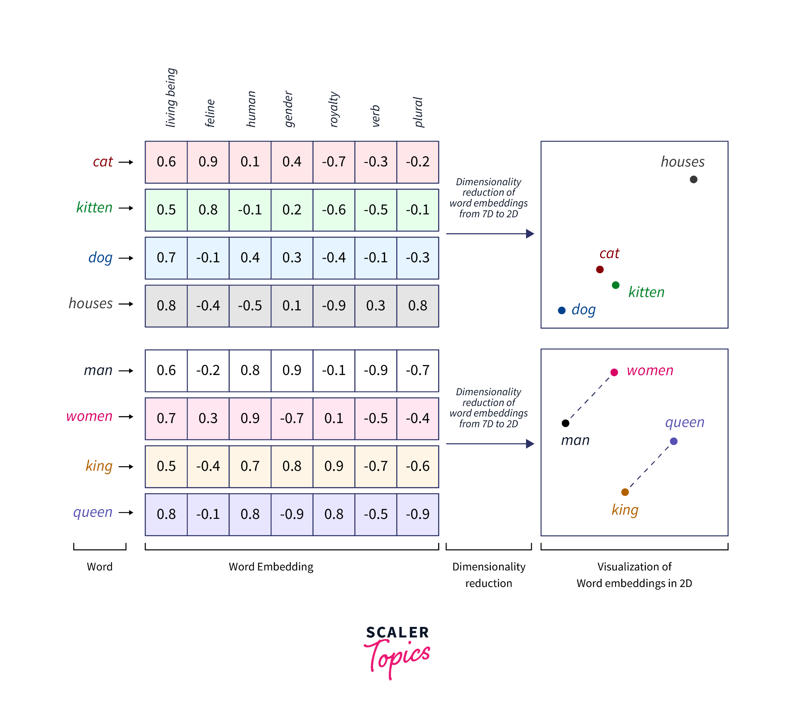
Why is more dimensions better? Each dimension may encode different meaning.
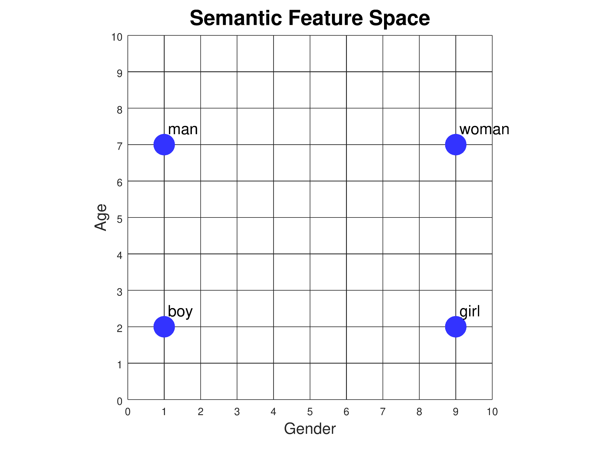
Why is more dimensions better? Each dimension may encode different meaning.
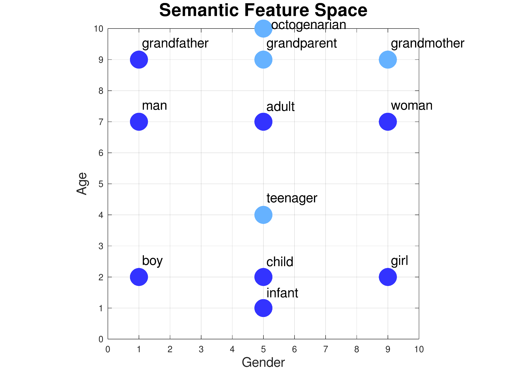
Why is more dimensions better? Each dimension may encode different meaning.
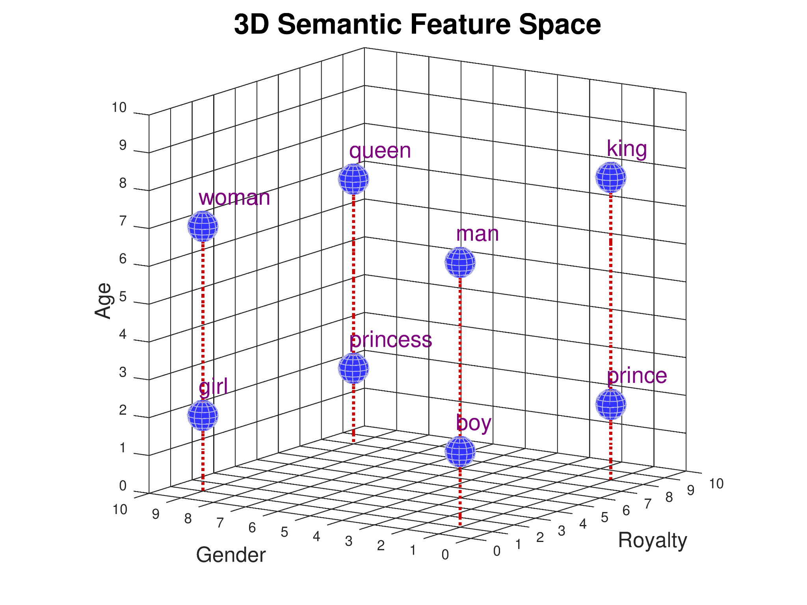
Word2Vec
https://www.tensorflow.org/text/tutorials/word2vec
Demo time:
https://www.kaggle.com/code/dlohmann/word2vec-embedding-using-gensim-and-nltk/edit
Embedding algorithms:
Latent semantic analysis : “count-based” method that involves finding term frequency–inverse document frequency (TF-IDF) co- occurrence __ matrix, then doing singular value decomposition (SVD) dimensionality reduction.__
Word2Vec : Models using s hallow, two-layer neural networks that are trained to reconstruct linguistic contexts of words. Word2vec takes as its input a large corpus of text and produces a mapping of the set of words to a vector space .
GloVe : GLObal VEctors for word representation. Based on co-occurrence of words in a corpus. Essentially a log-bilinear regression model with a weighted least-squares objective. Trained on the non-zero entries of a global word-word co-occurrence sparse matrix, which tabulates how frequently words co-occur with one another in a given corpus. Like LDA, but uses a model instead of matrix factorization to generate its end representation.
ELMO : Embeddings from Language MOdel.
BERT : Bidirectional Encoder Representations from Transformers.
Model predicting some of the words within a window in a corpus based on other words in the window.
Represents input words and output words as one-hot encoded vectors.
Uses a simple feed-forward neural network with 1 hidden layer.
The size of the hidden layer is the size of the output __ embedding.__
2 Methods:
Continuous bag-of-words __ model: predicts the middle word based on surrounding context words. The context consists of a few words before and after the current (middle) word. This architecture is called a bag-of-words model as the order of words in the context is not important.__
Continuous skip-gram __ model: Given a word, predicts all words within a certain range before and after the current word in the same sentence.__
The wide road shimmered in the hot sun.
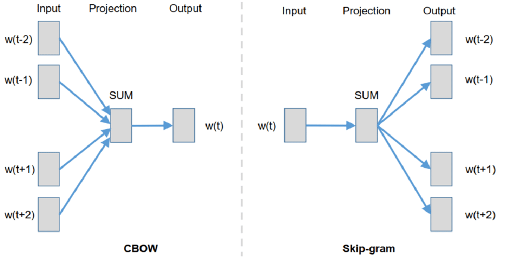
For a word-window of size N. generate embeddings of size E.
Create a neural network with:
1 input (the target word, one-hot encoded)
1 hidden layer (size of the output embedding, E).
2*N outputs (each predicted word, one-hot encoded).
The network must, given a target word, predict the N words before, and the N words after.
The skip-grams are used __ to train the neural network.__
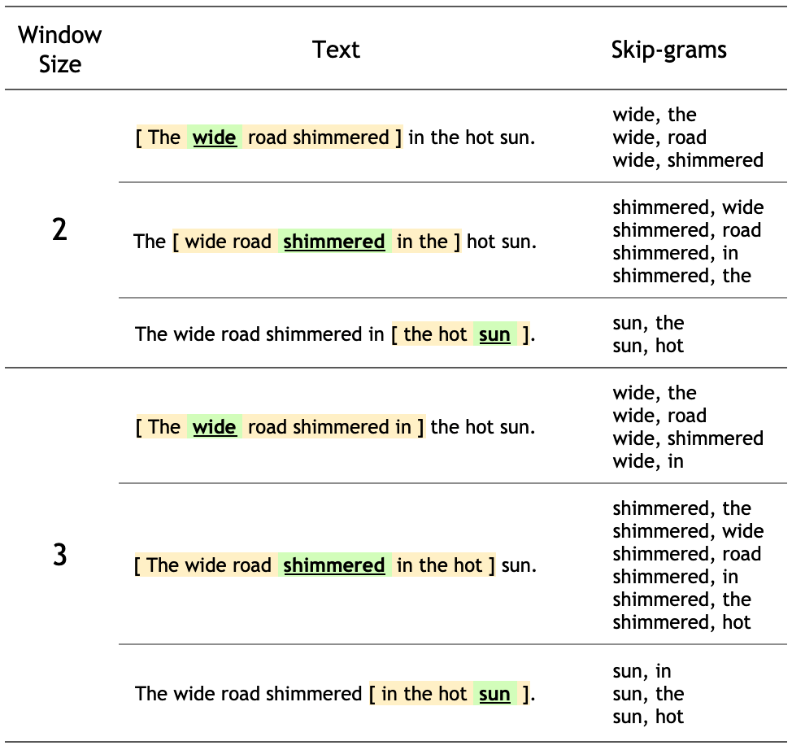
The training objective of the skip-gram model is to maximize the probability of predicting context words given the target word.
For a sequence of words w1, w2, ... wT, the objective can be written as the average log probability
where c is the size of the training context.
The basic skip-gram formulation defines this probability using the softmax function. where v and v’ are target and context vector representations of words and W is vocabulary size.
Computing the denominator of this formulation involves performing a full softmax over the entire vocabulary words, which are often large (105-107) terms.
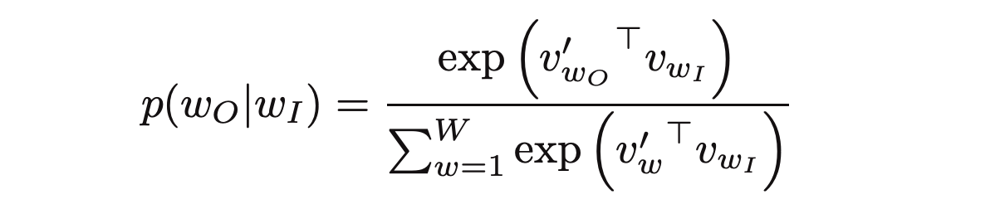
For a word-window of size N. generate embeddings of size E.
Create a neural network with:
2*N inputs (the target word, one-hot encoded)
1 hidden layer (size of the output embedding, E).
1 output (predicted word, one-hot encoded).
The network must, given the N words before, and the N words after, predict the target word.
The word pairings are used to train the neural network:
([she, a], is), ([is, great], a) ([a, dancer], great)
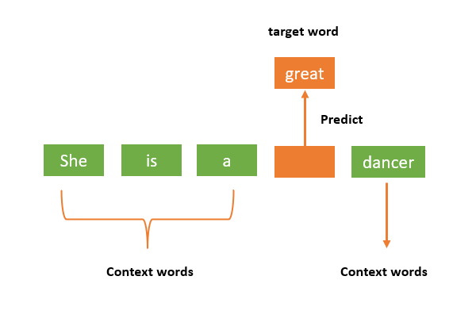